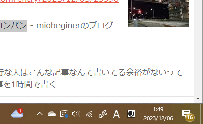
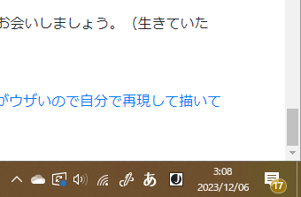

実は不老不死！？気づいていないだけでやばいやつ？もっちゃんについて調べてみた
（本当に苦行の人は記事を凝れない話）
皆さんこんにちは！
電気通信大学で過労〇一歩手前を彷徨いまくっていると言われているもっちゃんと申します！
今回は、元ツイ廃で現役ツイッター芸人である「もっちゃん」について自分なりに調べてみました！
一般的には知られていないもっちゃんの交友関係や素顔、ライフスタイル、裏の顔についても調べてみましたので、是非ご覧ください！
それではどうぞ！
（真面目パート。アドベントカレンダーについて）
この記事は、散歩・徒歩・苦行 Advent Calendar
2023の6日目（12/06）の記事です。カレンダーの穴を埋めるために急遽追加投入しました。
1日目から5日目までは、「よろしゅう」さんの記事のオンパレードでした。
チュウニズムのスコアタがあったので公園を巡ったでは、よくまあスコアのために徒歩を頑張るよなあ…、と老害じみながら思っていました（でも筆者は夏コミケとか冬コミケとか平気で始発待ちしますよね？？？）
徒歩中にメロンパンを食って、ずっと微妙に体調が悪かった、まだ苦しくなかった時のメロンパン、若干苦しくなってきたときのメロンパン、苦しいわりになんもないときのメロンパン。なんか徒歩記事というよりはメロンパンの苦行記事が続いていますが、残念ながら筆者はメロンパンという存在を許せないので、アンチです。いやあ、微妙に甘い感じが許せない…。
最後に、「レポートとぎえー課題と中間試験が一気に押し寄せて大変なので助かりマダガスカル。」と書いてあったので救えたようで何よりですが、かくいう筆者もエントリーシートと論文に追われていてそんなゆとりなんですよね…。
散歩・徒歩・苦行 Advent Calendar 2023
これは？
散歩や長距離徒歩に関する記事を書いていくアドベントカレンダーです。自分の身の回りのおもしろスポットを歩いて記事にしてもいいですし、ありえない長距離を歩いて苦しみながら記事を書いても良いです。
もっちゃんについて。隠れたツイッタラーとして活動中
もっちゃん（@sakuramochi0708）とは、電気通信大学に通う、隠れツイッタラーとして活躍されているかもしれない人物……いや、妖狐です！
Twitter @sakuramochi0708
Twitterもっちゃんは、「もちもちのメモ」というGithub Pagesでページ管理していて、ドメインをGoogle Domainsから年1400円で借りているメモページを運営しており、これは創設して3年が経過するのにCSSもまともに書けない狐です！（このcssはBootStrapを使用してかかれているのでマシ）
もっちゃんはTwitterをかなりの頻度で更新されていて、そのツイート数はなんと6年間で2.3万ツイートを超える数！……（あれ、すくねっ）。息をするかのようにツイートをするのがとても好きなようですね！
ところで、もっちゃんは他の19生ツイッタラーと比較してほとんど有名でない狐でもあります。
そうなってくると気になってくるのが素顔やライフスタイルなどのもっちゃんの中の人の存在についてですよね？
なので、今回は私がもっちゃんの素顔やライフスタイルなどの情報について徹底的に調べてみました！
それでは、次の項目からもっちゃんについて語っていきたいと思います！
もっちゃんの年齢と年収！仕事は？意外と稼いでいる！？
もっちゃんは果たしてどんな仕事をしているのでしょうか？
45クレのタキオン。
— もっちゃん@桜餅 (@sakuramochi0708) November 28, 2023
あしたから非常食おかゆです。
（うち無料5+3回、アシスト1回）
（ペラ輪の坂は二度とやらん( #`꒳´ )） pic.twitter.com/FHUlyw8rLd
たいへん自慢が遅れた、C102の戦利品 pic.twitter.com/0X5aGgLRWG
— もっちゃん@桜餅 (@sakuramochi0708) August 16, 2023
なんかいろいろなものにどばっとお金を使っていそうなので、なんとなく凄い仕事をしてそうですよね！
というわけで調べてみたのですが
え？あ？お金がありませんでした pic.twitter.com/d9S4Ui0cme
— もっちゃん@桜餅 (@sakuramochi0708) August 13, 2023
バイト先の方たちにクラフトビールのお店に連れて行って頂きました(´｡✪ω✪｡｀)✧*。
— もっちゃん@桜餅 (@sakuramochi0708) May 23, 2023
ありがとうございました！⸜(* ॑꒳ ॑* )⸝⋆* pic.twitter.com/k8LhmVhsny
お金がないながらもバイトをしている形跡をみつけました。
しかし、これ以上の情報を見つけられませんでした！残念！！
それでは次はみなさんが気になっているであろう自撮りやコスプレについてのリークです！
もっちゃんの自撮り！イケメン？実はウマ娘だった！？
もっちゃんの自撮りを見たくて、私は調べてみました。
過労〇で過酷そうな顔をしているのかな？と気になったのですが、なんと驚愕の事実が発覚！
モチ娘、夏合宿午前5時半の浜辺ダッシュ pic.twitter.com/WAW25lG0kN
— もっちゃん@桜餅 (@sakuramochi0708) August 28, 2022
自販機で飲み物を買うモチ娘 pic.twitter.com/QIQ8VPzShn
— もっちゃん@桜餅 (@sakuramochi0708) February 14, 2023
勝馬投票券を買うモチ娘
— もっちゃん@桜餅 (@sakuramochi0708) November 27, 2023
（実際は調布祭でキャッシュがなくてATMを利用する図） pic.twitter.com/rDIUHW9AW2
ウマ娘サバゲーダービー （？）
— もっちゃん@桜餅 (@sakuramochi0708) November 25, 2023
#調布祭
（ UECサバゲー愛好会さま @UecSurvivalGame 、ありがとうございました！） pic.twitter.com/v1GonbR3aV
モチ娘、乱射す
— もっちゃん@桜餅 (@sakuramochi0708) November 25, 2023
（協力： @UecSurvivalGame ） pic.twitter.com/HXd6hCLeww
なんと、もっちゃんはウマ娘だったんです？（あえて検索避けしないスタイル）
電通大は男子９割と言われているし、普段からダウナーっぽい喋り方をしているので意外……！
これはスクープか？
と思ったのですが、
これはチームラボの展示で花に押しつぶされそうになるのを必死に抑えている図
— もっちゃん@桜餅 (@sakuramochi0708) July 5, 2023
（インスタ映えを無視する狐） pic.twitter.com/khU7zv0TFT
こんな普通の姿もありました！
さらに
Twitterストーリーモード
— もっちゃん@桜餅 (@sakuramochi0708) August 30, 2019
霧雨魔理沙 @工研 pic.twitter.com/gNdrdT2r2w
ラボ酒飲みほろ酔い麻雀（ほろよい×2、檸檬堂、果実酒5度） pic.twitter.com/hbjMenLzPf
— もっちゃん@桜餅 (@sakuramochi0708) November 26, 2023
霧雨魔理沙の姿もありました！
もうわかりませんねｗｗｗ
このような事も平気でこなすのは、もっちゃんの謎のメンタルの強さが現れていますね！
このほかにもたくさんの姿の写真があったのですが、残念ながらマスクを外した写真は見つかりませんでした（これはほんとの話）。なので、もっちゃんの顔については謎のままとなります。
しかし、今後なにかしらの事故で自撮り写真を上げる可能性があるので、今後も要チェックです！
もっちゃんのサークル活動は？まだ現役？
さきほどの画像は2019年のもので、今の学年からさかのぼると（留年してなければ）学域１年となりますが、今でもサークル活動をしているのでしょうか？
これで終わりました！お疲れ様でした！
— Tights (@StuffTight) November 12, 2023
リプレイを頼んだかたは早めに送ります pic.twitter.com/m1VqqwsuwJ
（補足説明：一番左の藍しゃま帽子かぶっている狐）
175cmサイズの
— もっちゃん@桜餅 (@sakuramochi0708) November 22, 2023
- 「工 研太郎（たくみ けんたろう）」
- 「古明地こいし Illustrated by @etoriAtelier117 さん 調布祭2019ポストカード」
の立て看板を作りました。
調布祭では、工学研究部（ @ueckoken ）と電々。通信（ @uec_Touhou_ ）に飾ります。
ぜひ、175cmのビッグパネルと写真を撮ってね！ pic.twitter.com/DPCYnjg0lH
おそらく現役だと思うのですが、作品を提供している老害ってだけの可能性もあるのでわかりませんね（笑）
今後のツイートで明らかになる可能性もあるので要チェックです！
もっちゃんの研究室活動は？ゆるい？それとも…？
修士１年ということで研究室活動も盛んであると思われます。はたしてどのような研究をしていて、どのような充実した毎日を送っているのでしょうか？
#終点ラボ
— もっちゃん@桜餅 (@sakuramochi0708) November 21, 2023
おまえ一限から居たよな？ pic.twitter.com/WKoQNMQNFq
#終点ラボ 終電 pic.twitter.com/8giHKTeC1B
— もっちゃん@桜餅 (@sakuramochi0708) July 1, 2023
#終点ラボ
— もっちゃん@桜餅 (@sakuramochi0708) February 6, 2023
精神ズタボロです pic.twitter.com/w6QTs4xYkx
#終点ラボ
— もっちゃん@桜餅 (@sakuramochi0708) December 26, 2022
うわ！！！！機器修復のために明日一限登校さん？！？！ pic.twitter.com/LTAoVZ9Mak
…なんかいっつも #終点ラボ っていっていますね？
しかし、これ以上の情報についてはわかりませんでした。もっちゃんさんの今後の活躍に期待ですね！
（釈明：後学期になってから、昼12時以降の登校なので、学部生時代よりは滞在時間短いです。また、半分は遊んでいるので、問題ありません……？ほんとか？？？下のツイートはなんだ？）
【今日のラボ】
— もっちゃん@桜餅 (@sakuramochi0708) December 5, 2023
めがすこ(@megane_sukore)とボスとのMTG内
めがすこ「〇〇をもっちゃんさんに協力してもらい……」
様々な人を手助けしていることを知っている（共同研）ボス「もっちゃんさんも持つものがあるんだから、あんま頼っちゃだめよ」
ワイ、どんな扱いなんや…（定期的に表れるコント）
もっちゃんの炎上。過去にはこんなことに遭っていた！？
普段は「くぁｗせｄｒｆｔｇｙふじこｌｐ」と言いながら過ごしていそうなもっちゃんさんですが、噂によると過去にこんな目に遭っていたとのこと！
京王線内、ガソリン巻かれて、刃物盛ったやつが暴れとる
— もっちゃん@桜餅 (@sakuramochi0708) October 31, 2021
これはホームドアとドアコックを触った手 pic.twitter.com/7xd6kcalQN
— もっちゃん@桜餅 (@sakuramochi0708) October 31, 2021
野次馬もくそも、当該列車なんだよなぁ
— もっちゃん@桜餅 (@sakuramochi0708) October 31, 2021
どうやらこのあとにちゃんねるとかでプチ炎上したみたいですね。
しかし、このほかに特段炎上した情報は見受けられませんでした！なので、もっちゃんさんはインターネットリテラシーのある狐だとわかりました。
今後も炎上を起こさず過ごしてほしいですね！
（追記：これこそ真の「苦行」記事にしてもよかったかもしれない。すべてが終わったらしいので、将来の記事ネタにでもとっときます）
もっちゃんについてのまとめ
いかがでしたか？
今回は、隠れツイッタラーであるもっちゃんについて徹底的に調べてみました！
やはりほとんどの情報が不確定要素が多いせいで、謎おおき狐でしたね！
しかし、謎が多いほど、今後も追っていきたい存在であるということ！今後ももっちゃんさんから目が離せそうにありませんね！
それではここまで読んでいただきありがとうございました！
（まだちょっとだけつづきます）
（真面目パート。本当に苦行している人は記事を書けない）
さて、真面目パートです。いかがでしたか？12/05の帰り道に「論文やらなくちゃ終わらなくね？でもESもかかなければならない。あれ、国際論文の締切にこのままだと間に合わなくね？苦行だ！！！！」という会話をしてから、苦行なら記事にしよう！と思い立ってすぐ書いた感じになります。
実際この後からESを書くんですけど、明日のお昼までに終わるんですかね…？たぶん無理そう…。カウンセラーの先生、ごめんなさい……。
でも、実際、あまりにもデスマをしているせいで、記事をかいたりあそびにいったりバイトをしたり満足にできてない状況が続いています。もしかしたら、苦行の記事をかけている内は、「真の苦行」ではないのかもしれません。ｱｰｵｿﾛｼｱ｡
さて、明日12/07のAdvent Calendarは「ごっち」さんの「金欠でも大丈夫、苦行ドライブの始めかた」だそうです。普通にレンタカーの借り方とかきになりますね。どのようにお金を工面しているのでしょう。楽しみですね！（ちなみに、本チャンのUEC Abvent Calendar 2023でもたまたま「ごっち」さんが翌日みたいです。（これまじで）
それでは、12/13の本チャンの記事、もしくは12/18の記事でお会いしましょう。（生きていたら）
参考文献：「いかがでしたか？」クソキュレーションサイトがウザいので自分で再現して描いてみた【まとめブログ】
参考資料：書き上げた記事の速度＝２時間もかかってなかった（画像右下をみてね）
